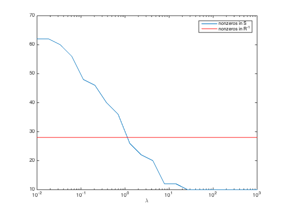

% Joëlle Skaf - 04/24/08 % (a figure is generated) % % Suppose y \in\reals^n is a Gaussian random variable with zero mean and % covariance matrix R = \Expect(yy^T), with sparse inverse S = R^{-1} % (S_ij = 0 means that y_i and y_j are conditionally independent). % We want to estimate the covariance matrix R based on N independent % samples y1,...,yN drawn from the distribution, and using prior knowledge % that S is sparse % A good heuristic for estimating R is to solve the problem % maximize logdet(S) - tr(SY) - lambda*sum(sum(abs(S))) % subject to S >= 0 % where Y is the sample covariance of y1,...,yN, and lambda is a sparsity % parameter to be chosen or tuned. % A figure showing the sparsity (number of nonzeros) of S versus lambda % is generated. % Input data randn('state',0); n = 10; N = 100; Strue = sprandsym(n,0.5,0.01,1); nnz_true = sum(Strue(:)>1e-4); R = inv(full(Strue)); y_sample = sqrtm(R)*randn(n,N); Y = cov(y_sample'); Nlambda = 20; lambda = logspace(-2, 3, Nlambda); nnz = zeros(1,Nlambda); for i=1:Nlambda disp(['i = ' num2str(i) ', lambda(i) = ' num2str(lambda(i))]); % Maximum likelihood estimate of R^{-1} cvx_begin sdp quiet variable S(n,n) symmetric maximize log_det(S) - trace(S*Y) - lambda(i)*sum(sum(abs(S))) S >= 0 cvx_end nnz(i) = sum(S(:)>1e-4); end figure; semilogx(lambda, nnz); hold on; semilogx(lambda, nnz_true*ones(1,Nlambda),'r'); xlabel('\lambda'); legend('nonzeros in S', 'nonzeros in R^{-1}');
i = 1, lambda(i) = 0.01 i = 2, lambda(i) = 0.01833 i = 3, lambda(i) = 0.033598 i = 4, lambda(i) = 0.061585 i = 5, lambda(i) = 0.11288 i = 6, lambda(i) = 0.20691 i = 7, lambda(i) = 0.37927 i = 8, lambda(i) = 0.69519 i = 9, lambda(i) = 1.2743 i = 10, lambda(i) = 2.3357 i = 11, lambda(i) = 4.2813 i = 12, lambda(i) = 7.8476 i = 13, lambda(i) = 14.3845 i = 14, lambda(i) = 26.3665 i = 15, lambda(i) = 48.3293 i = 16, lambda(i) = 88.5867 i = 17, lambda(i) = 162.3777 i = 18, lambda(i) = 297.6351 i = 19, lambda(i) = 545.5595 i = 20, lambda(i) = 1000
